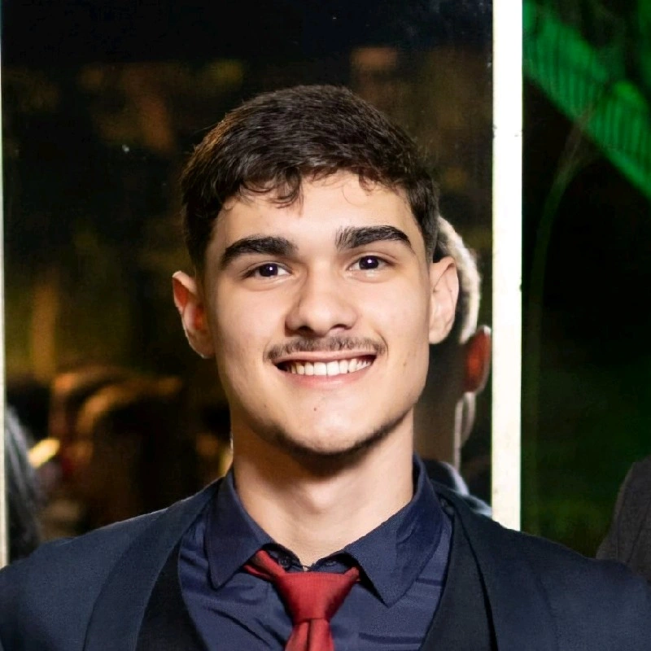

PORTFOLIO JOÃO MARCOS
Olá, sou estudante de Sistemas de Informação no Centro Universitário Católica do Leste de Minas Gerais,
com formação técnica em Administração pelo Senac Minas. Desde 2024, atuo como Professor de Inglês
na Wizard by Pearson, onde desenvolvo habilidades de comunicação e ensino. Tenho experiência em rotinas
administrativas, participação em projetos de mentoria como o Projeto VOU da Usiminas, além de inglês
avançado e conhecimentos em informática (Word, Excel e PowerPoint). Atualmente, meu foco é consolidar
carreira em Tecnologia da Informação, unindo administração e idiomas para atuar de forma estratégica e
inovadora.
